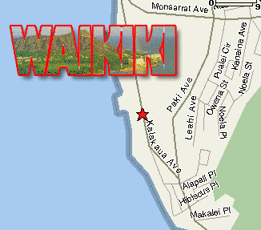

|  |
directions to
David Hiple's place
2957 Kalakaua Avenue #515
922-8515
Take Kalakaua Avenue Diamondhead direction through Waikiki. Pass the zoo, the aquarium, and the New Otani Hotel. There are three similar-looking buildings on the ocean side, connected by bridges. David's building in the Diamond Head end one. Take the elevator located in the middle of the three buildings to the fifth floor and look for #515. Street parking - do not park in the apartment building lot! |